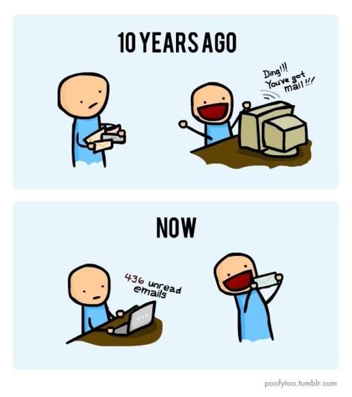

Homepage
Blog Posts
My Projects
Contact Me
Hello, my name is Anne~ It is technically pronounced "Ann" but my parents had meant to name me "Annie". As a result, I've gotten accustomed in answering to both. Confusing right?
My Background
I have lived in the southern California all of my life so I take sunny weather for granted. I grew up in and currently live in the Los Angeles area. I left for four years to attend University of California: San Diego majoring in Mathematics and Psychology. My first year out of school was more experimental in that I worked two jobs. I funded loans at a mortgage company in the morning and taught high school mathematics at an after school tutoring center in the afternoon. After a year, I was referred Citibank for a mortgage assistant position. I worked at Citi for two years under an awesome boss and tutored math on the side. I was getting quite comfortable but that's not the way it is suppose to be. No one should be satisfied with life in their 20s, they should be striving to achieve more.
Giving up my steady job at Citi, I decided to embark on a new adventure in tech. So why choose tech? Well ever since 1995 when the internet became commercialized, everything has been about tech. It is a fast-growing industry and I didn't want to get left behind. I didn't want to continue using technologies that I didn't understand. So when my coworker introduced me to an alumni of Dev Bootcamp, I was sold. I am now a developer-in-training at DBC.
My Interests
Other than working, I live a pretty simple life. I like to bake and dabble in arts and crafts. Whenever there is too much of a particular ingredient in the house, I am looking online for recipes to use them on. During the past few years, I have also started to make custom cards for special occassions. There is nothing better than receiving something that is not a bill or junk mail in the post.
I also love trying new things. It can be anything ranging from simply going to a new restaurant to the extreme of sky diving. There are not a lot of things that I wouldn't be willing to try at least once.